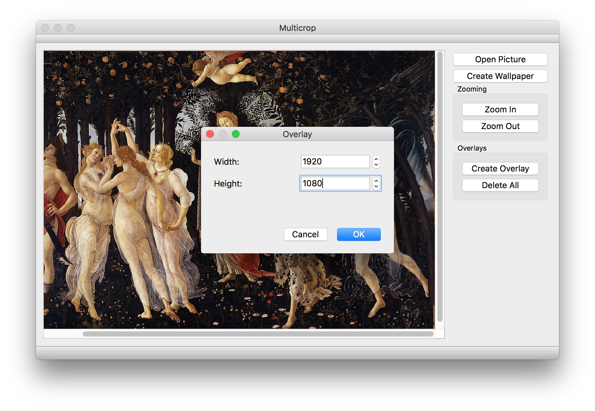
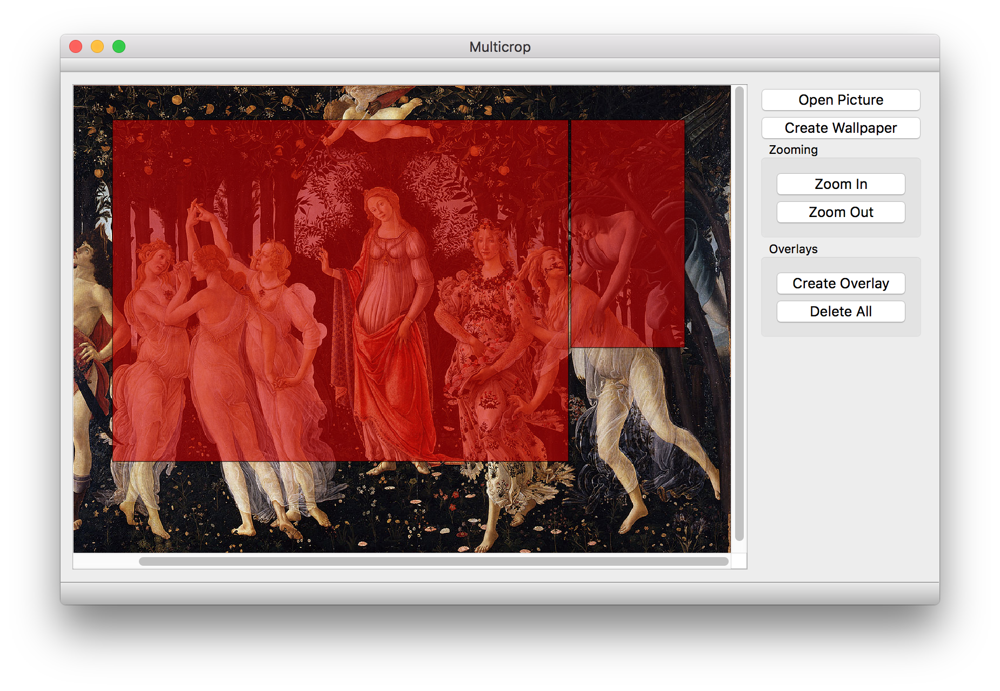

Get the most out of your multi-screen setup and perfectly align your wallpapers with Multicrop.
First load the picture you want to crop. Then create overlays that match the size of your screens. Move the red squares to the desired positions. You can delete them by double-clicking on them. When you're happy with your arragment your ready to save the pictures.
 View on GitHub